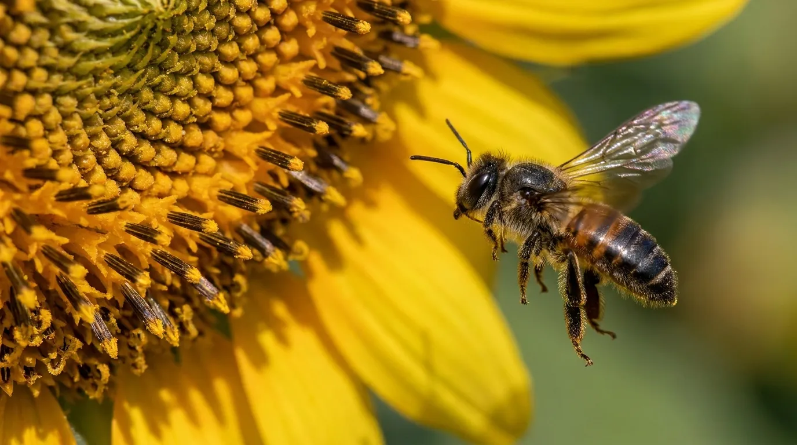

← Все опылители
Экспериментальное направление
Мелипонины
Безжалые тропические пчёлы для групповых изоляторов.
Эксперимент по опылению
Новый подход для изолированных участков
Для минимизации рисков укусов персонала пчёлами и шмелями во время цветения мы проводим эксперимент по опылению безжалыми тропическими пчёлами в групповых изоляторах.
В 2027 году первые партии этих экзотических, но очень полезных и интересных насекомых прибудут на нашу станцию. Будем рады поделиться опытом!
Если опыт будет признан состоявшимся, вероятно, эти насекомые займут до 50 % опыления групповых изоляторов.